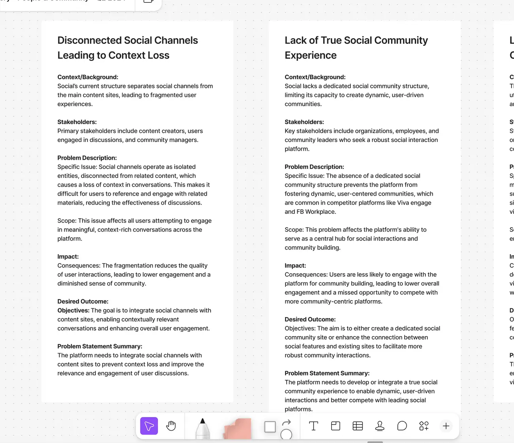
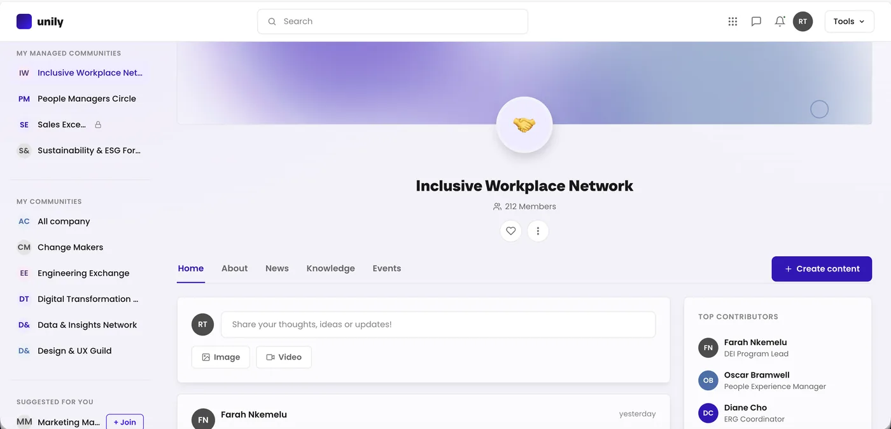
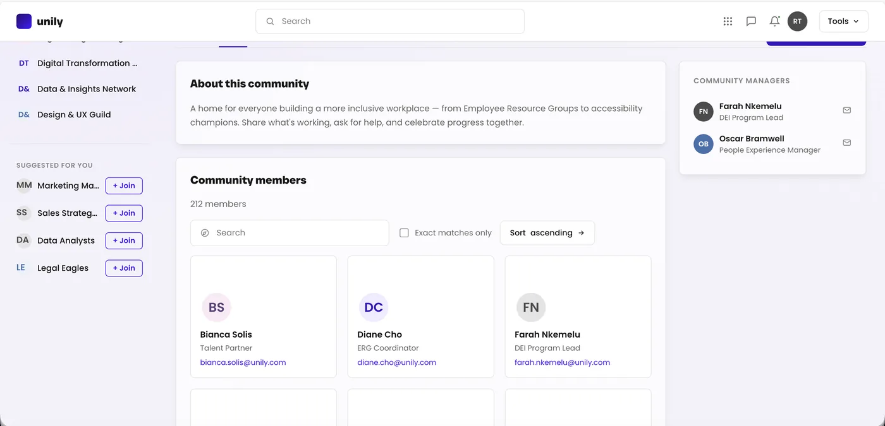
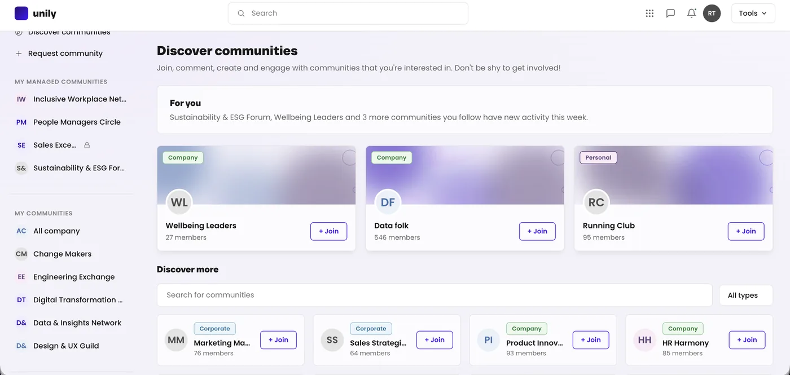
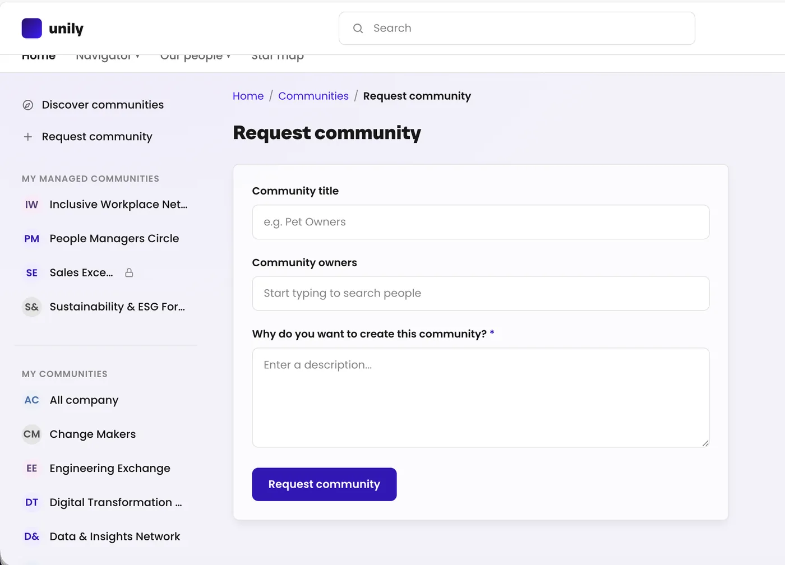
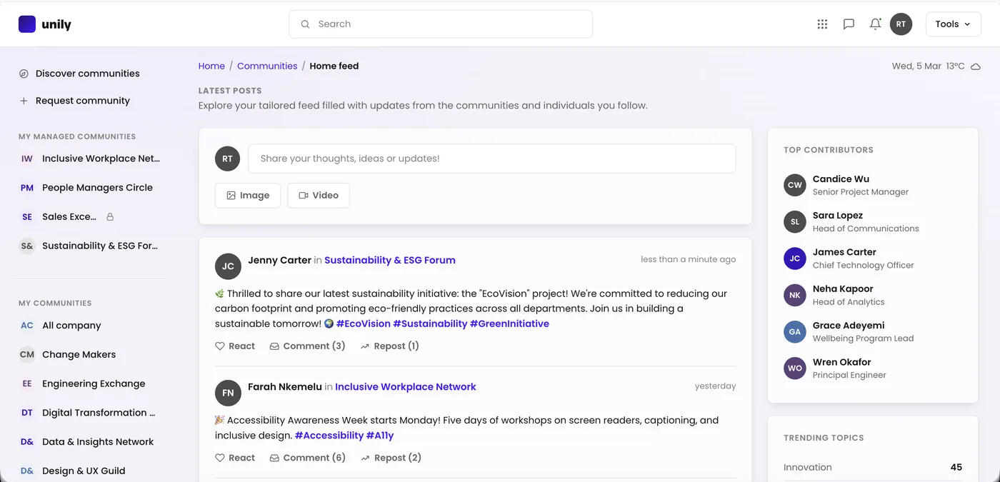
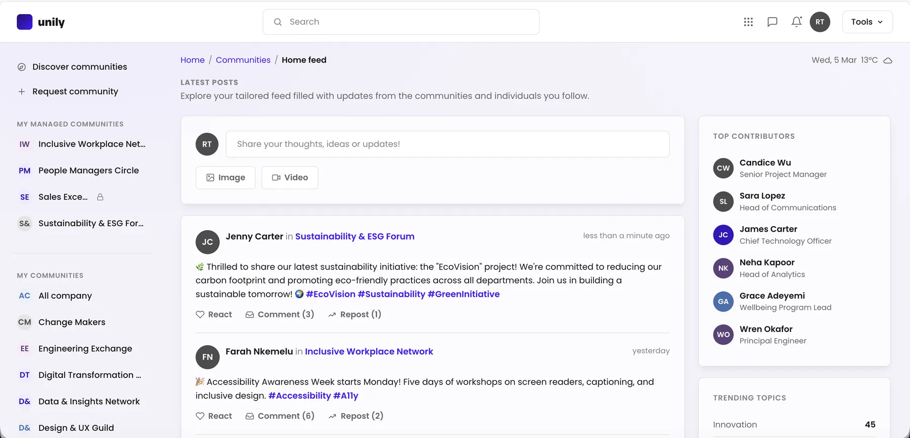
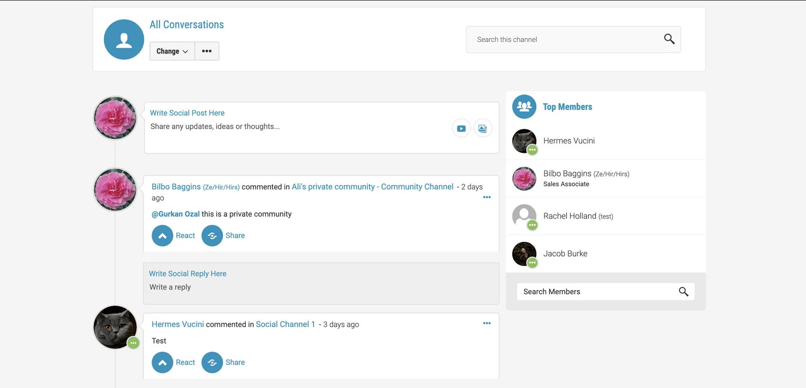

Five problems, one root cause
Redesigning Unily’s social experience from disconnected channels bolted onto content into dedicated Communities — with membership, discovery, network effects and knowledge sharing built in from the start.
Five threads that were all the same thread
Discovery surfaced five separate problems with the platform’s social experience, and the temptation was to treat them as five pieces of work. They weren’t. Every one traced back to the same thing: social had never been designed as its own experience. It lived next to content, never connected to it.
Disconnected channels cut off from the content they related to, so users lost the thread mid-conversation. No real community structure at all, only channels — leaving the platform unable to compete with Viva Engage or Facebook Workplace. No network effect, because without cross-referencing or @mentions across sites, posts couldn’t spread beyond their original audience.
Too complex to set up, actively suppressing adoption among the community managers meant to be driving it. And knowledge scattered across the platform, producing silos and repeated work rather than a shared resource.
Reading them as one problem rather than five is what made a redesign the right answer instead of a backlog of fixes.

Communities as a first-class thing, not a feed attached to content
Rather than patch the existing social channels one problem at a time, I mapped Communities as a distinct object in the platform’s IA: membership, a structured set of tabs — Home, About, News, Knowledge, Events — and a discovery layer for finding and requesting new ones, sitting alongside content sites rather than inside them.
One structure had to serve two very different community types: official, org-wide ones and grassroots, employee-created ones — without either feeling like an afterthought. One core object, configurable across both, rather than a generic template that fits neither.


Communities are useless if nobody finds them
“Suggested for you” surfaces relevant communities automatically, so employees find and join one without being told it exists. Managers request a new community through a guided flow instead of raising a support ticket — which was the single biggest brake on adoption.
Top contributors and trending topics generate automatically from real activity and hashtags. Curating them by hand doesn’t scale, and would have reintroduced exactly the manager burden the redesign set out to remove.


Two existing systems, no parallel build
Communities run on the block system from Portal Blocks — card grids for trending topics and contributors, the Events block for the “Upcoming events” widget — rather than a bespoke component set.
That is also why Events could appear meaningfully inside a Community with no additional engineering: the object model already existed. The Knowledge tab was scoped directly with the teams already responsible for knowledge management, so Communities became a surface for existing knowledge tools rather than a competing one.

Integrated into the platform, not a separate social product
Building a standalone social platform was the cleaner engineering story, and it would have recreated the “disconnected from content” problem at a bigger scale while duplicating infrastructure that already existed.
Communities went into the existing platform IA instead, reusing the systems already built. Social feels like part of the product rather than a bolt-on — which was the original problem, stated as a solution.
Every finding got a full answer, not a partial one
Communities has not launched, so there are no post-launch numbers to report. Membership growth, communities created, setup time and manager feedback are what it will be judged on.
The clearest pre-launch signal was how directly the five original problem statements mapped onto shipped features. Every research finding had a full answer in the final design rather than a partial one — which is the test I’d apply to any redesign that starts from a list of complaints.
The same posts, either side of the redesign
Before, social was a channel stream: every post in one undifferentiated list, labelled with the channel it came from and little else. After, the feed is built from the communities you belong to — each post attributed to its community, alongside contributors and trending topics generated from the activity itself rather than curated by hand.

